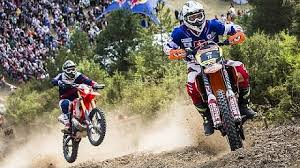
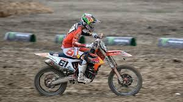
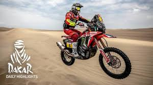

El Campeonato del Mundo de Motociclismo que popularmente recibe el nombre de la categoría principal de MotoGP es la máxima competición mundial de motociclismo de velocidad y se divide en tres categorías: MotoGP, Moto2 y Moto3. 18 carreras de motos en 14 países distintos componen el calendario actual.
El Campeonato Mundial de Superbikes es un campeonato de motociclismo de velocidad que depende de la Federación Internacional de Motociclismo. Su historia comienza en 1988. En este caso las motos que se utilizan deben ser de la categoría superbike, son de 4 tiempos y de distintas cilindradas.
La temporada 2017 comenzó el 25 de febrero en Phillip Island y terminará el 4 de noviembre en el Losail International Circuit después de 13 rondas; en España nos llevamos dos capítulos de esta interesante competición.
A primeros de abril tuvo lugar el campeonato MotorLand Aragón y en octubre la competición pasará por el circuito de Jerez. En la actualidad en el Mundial de Superbike dominan las tres primeras plazas los británicos Rea (Kawasaki) , Sykes (Kawasaki) y Davies (Ducati). En la séptima y la octava posición encontramos a dos españoles, Forés (Ducati) y Torres (BMW).
El enduro es una modalidad de motociclismo que se practica en campo abierto y también en cubierto. La palabra enduro tiene que ver con la palabra inglesa endurance que significa resistencia. Y eso es precisamente lo que tienen que tener los pilotos que quieran enfrentarse a esta competición tipo rallie.
Las motocicletas deportivas medianas tienen su lugar en el campeonato mundial de Supersport. Es una competición que se desarrolla en circuitos. El campeonato se corre como una clase soporte del campeonato mundial de Superbikes y se basa en las grandes motocicletas deportivas de producción. Es una competición muy interesante que tiene un público fiel en muchos países.

El campeonato mundial de Motocross es otra de las citas que ningún aficionado a las motos quiere perderse. Es una prueba que se desarrolla en varios países saltando de continente. El italiano Antonio Cairoli (actual líder), el esloveno Tim Gasjer y el holandés Jeffrey Herlings son los pilotos más destacados del circuito. En España contamos con Jorge Prado en MX2.
Hemos dejado para el final esta competición tan excitante pensada para los amantes de las emociones fuertes. Coches, camiones, quads y motos son las cuatro categorías de esta prueba con tanta historia. Entre estas modalidades sin duda la de motos es la más peligrosa de todas las que se dan en el rally París-Dakar, debido a que el conductor se encuentra desprotegido. También es la más popular, ya que su coste es asumible para muchos conductores aficionados, con motos de producción en serie tipo Enduro.
